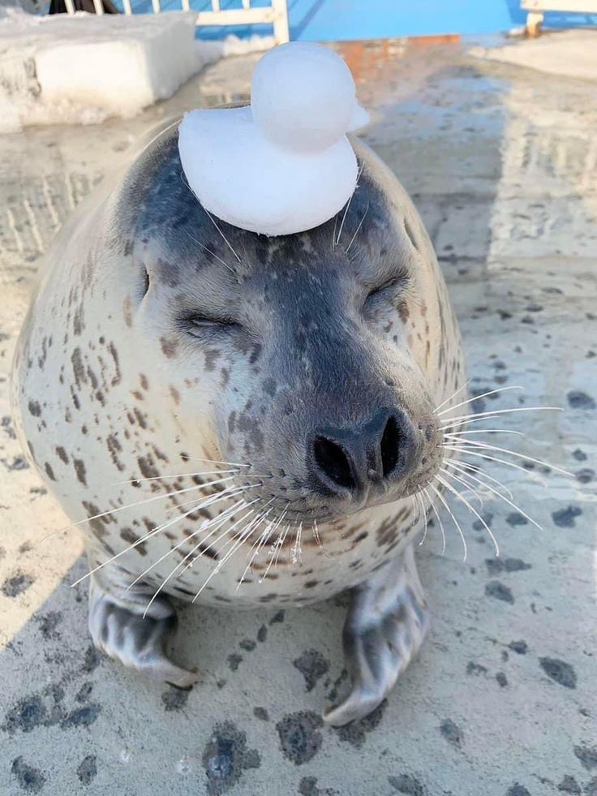

Lab 7 - Functions

Challenge
My partner and I worked together to write functions that mess with scripts made through user input.
Problems
This lab was a bit challenging. I tried to figure out how to make the return value a different font because I thought it would be fun, but it seemed to be outside of my skillset because even googling it couldn't help me much. I ended up just changing the font of the whole line because that was all I knew how to do. My partner also had issues with getting the function to display on her page, so I had to help with that.